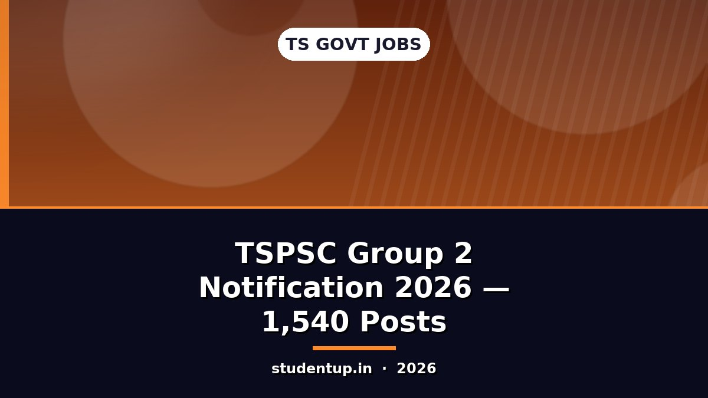
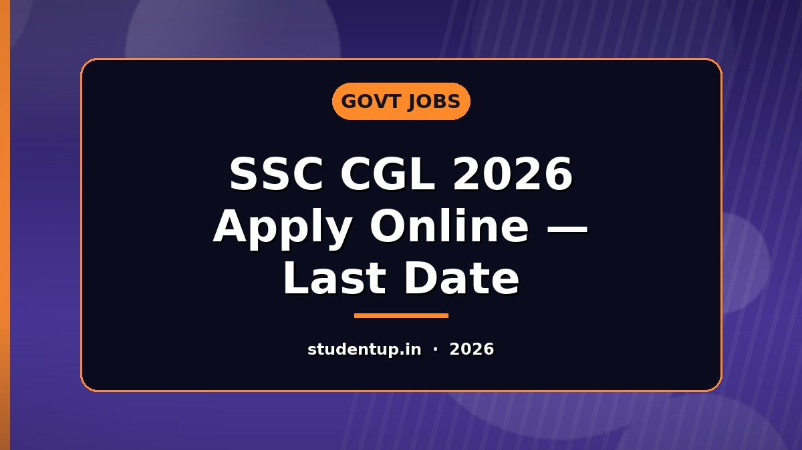
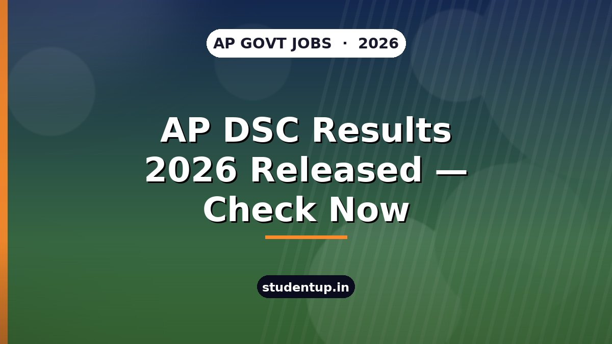
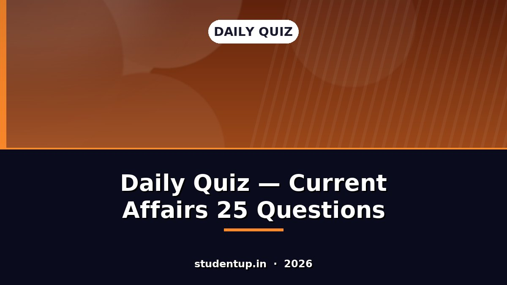
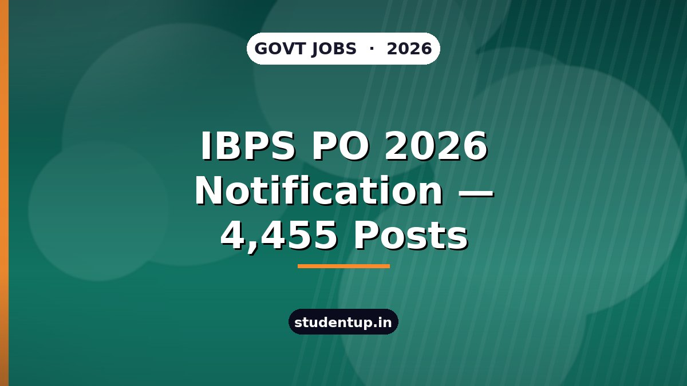

"Advanced ga build chesava?" ane prashnaki evidence. Prathi number repo lo nunchi vachindi (claim kadu).
inc/ PHP modules (144 theme files) — quiz, schema, consent, security, megamenu, measure…inc/quiz.php daily quiz backend (IST rollover, server-side scoring)Ivi ippude autoblog/image_gen.py tho generate chesinavi — stock images kaavu, mana own rendering. 3 layouts rotate avtayi (bottom / center / top) kabatti post-to-post copy feel raadu. v244 lo kotha polish: diagonal stripe texture, corner glow, left accent bar, bottom shadow fade, vignette. Text eppudoo center safe band (21%–79%) lo — mobile square crop lo kuda okka letter kuda poodu.





| Item | Status |
|---|---|
| Hero + "Search StudentUp" box, kinda category rail (horizontal scroll, prathi section ki separate icon) | ✅ |
| Phone drawer menu + icons pani chestundi | ✅ |
| Tagline removed · H1 SEO kosam DOM lo, kanipinchadu | ✅ |
| "Search / Blocksy: Search Block" stray text ledu | ✅ |
| Save / Compare / Print-PDF buttons articles lo levu | ✅ |
| Students Internet Center — prathi post kinda oke premium box | ✅ |
| Horizontal scroll ledu · 44px tap targets · 16px inputs (zoom aagutundi) | ✅ |
| CWV + a11y audit (29 pages) — 0 blockers | ✅ |
Laptop + phone rendu okkasaari choodali ante → Device lab.